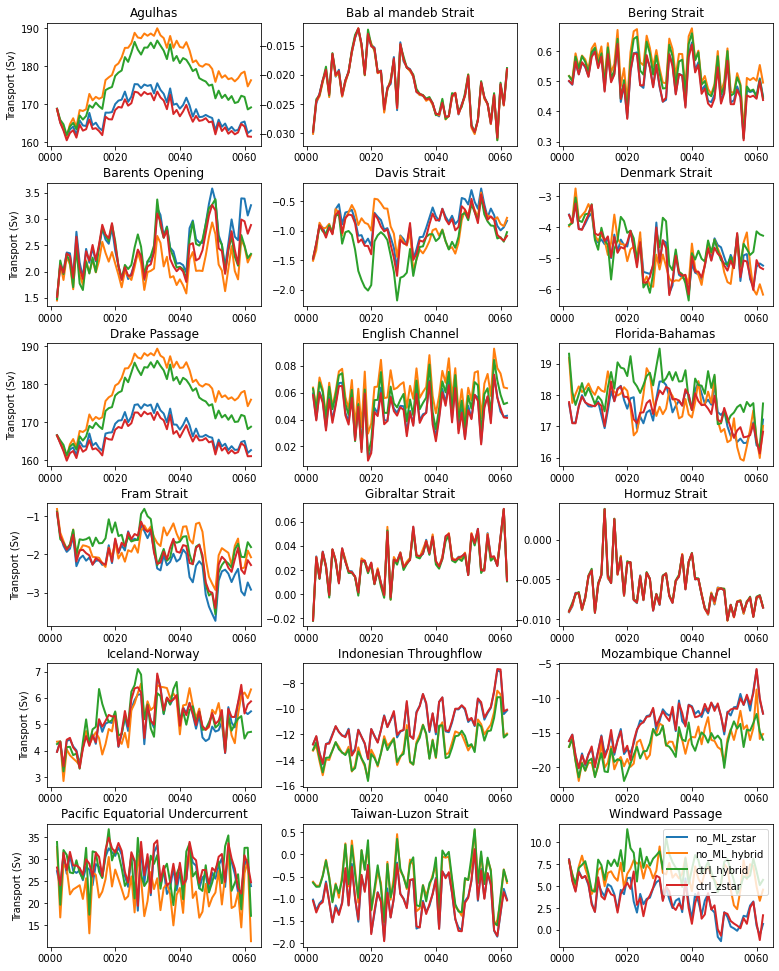

Section transports
Section transports#
%%capture
# comment above line to see details about the run(s) displayed
from misc import *;
%matplotlib inline
transports = []
for path, case in zip(ocn_path, casename):
ds = xr.open_dataset(path+case+'_section_transports.nc')
transports.append(ds)
def plotPanel(section,n,label):
ax = plt.subplot(6,3,n+1)
plt.plot(section.time,section.values, lw=2, label=label)
plt.title(section.sections.values,fontsize=12)
plt.text(0.04,0.11,'Mean = '+'{0:.2f}'.format(section.data.mean()),transform=ax.transAxes,fontsize=10)
plt.grid()
if n in [0,3,6,9,12,15]: plt.ylabel('Transport (Sv)')
return
fig = plt.figure(figsize=(13,17))
for n in range(0,len(ds.sections)):
for i in range(len(casename)):
plotPanel(transports[i].transport[n,:],n,label[i])
fig.text(0.5,0.955,str(casename[0]),horizontalalignment='center',fontsize=14)
plt.subplots_adjust(hspace=0.3)
plt.legend();
